IFT 2255 - Devoir 3 - Implémentation et tests
Information générale
Nom: Félix Bélanger-Robillard
Matricule: 3159
Courriel: felix.belanger-robillard@umontreal.ca
temps mis: 23 heures
Nom: Antoine Zimmermann
Matricule: 1429
Courriel: antoine.zimmermann@umontreal.ca
temps mis: 16 heures
Nom: Gevrai Jodoin-Tremblay
Matricule: 9650
Courriel: gevrai.jodoin-tremblay@umontreal.ca
Temps mis: 25+ heures
Nom: Philippe Caron
Matricule: 9846
Courriel: philippe.caron.4@umontreal.ca
Temps mis: 20 heures
Distribution des tâches
Soumetteur: Gevrai
| Tâche | En équipe | Antoine | Félix | Gevrai | Philippe |
|---|---|---|---|---|---|
| Implémentation | Création de tous les rapports | Interfaces membre et fournisseur | Base de données+Managers, Procédure comptable principale, Traitement du fichier de comptes reçus | SessionManager, interfaces utilisateurs | |
| Tests unitaires JUnit | Suppression d'un service | Traiter comptes reçus (ACME) | Gérer session (Membre) | Vérifier le statut d'un membre | |
| Javadoc | 30% | 70% | |||
| Manuel utilisateur | 100% | ||||
| Rapport | 70% | 30% |
Hypothèses
Il n'y a pas de connexion établie avec le logiciel tiers développé par Acme pour les services financiers. Dans le même ordre d'idée, aucun fichier n'est réellement envoyé par courriel. Par contre, nous avons implanté un répertoire consultable directement dans le logiciel.
Nous avons supposé que:
- 1) Dans tous les cas de verification d'utilisateur, ce dernier peut être identifier des deux manières: avec la carte, ou en tapant manuellement son numero de membre. Par contre, n'ayant pas de lecteur, nous assumons qu'il fonctionne comme un lecteur code-barre et qu'il ne fait que transcrire l'information qui peut être écrite à la main.
- 2) La somme des frais totale réalisée par le fournisseur est à titre indicatif et n'influe pas la somme qu'il percevra.
- 3) Nous effectuons uniquement l'enregistrement des données du TEF et ne sommes pas responsable du TEF lui-même.
Résumé
Le but ultime de ce projet est d'informatiser toutes les données de ChocAn ainsi que d'automatiser plusieurs fonctionalités courantes, comme la création des rapports et des données de paiements. Tout sera stocké au Centre de Donnée ChocAn, il nous faudra au minimum un serveur sur lequel sera installé le logiciel. Des ordinateurs seront nécessaires pour permettre l'accès aux gérants ChocAn. Le système interagira avec les autres systèmes principalement en créant les enregistrements et rapports nécessaires à chacun, excepté avec les terminals fournisseurs, qui devront se connecter au serveur. Ainsi, les fournisseurs interagiront avec le système grâce à un terminal (développés par une entreprise externe), les clients et les gérants ChocAn avec leurs ordinateurs.
Exigences
Glossaire
ACME: Organisation tierce, responsable de la comptabilisation et des procédures financières de ChocAn. Carte de membre: Carte en plastique gaufrée avec le nom et le numéro à neufs chiffres d'un membre, également doté d'une bande magnétique où ces informations sont encodées. CDC: Abréviation de Centre de Données ChocAn. Centre des Données ChocAn: Ordinateur central où se trouve le logiciel de traitement de données de ChocAn. Code de service: Code à six chiffres associé à un service de santé. Date de service: Date dans le format JJ-MM-AAAA requise lorsqu'un fournisseur offre un service à un membre. Enregistrement: Agrégation de données correspondant à un membre, un fournisseur ou un service offert par un fournisseur à un membre. Fournisseur: Professionnel de la santé affilié à ChocAn fournissant des services aux membres. Liste des services des fournisseurs: Rapport envoyé aux fournisseurs, en pièce jointe d'un courriel, contenant une liste des services fournis aux membres ainsi que le total des frais pour la semaine. Liste des services des membres: Rapport envoyé aux membres, en pièce jointe d'un courriel, contenant une liste, triée selon la date du service, des différents services reçus durant la semaine. Membre: Personne addicte au chocolat payant un frais d'adhésion mensuel pour pouvoir bénéficier des avantages offerts par ChocAn. Mode interactif: État du logiciel du Centre de Données de ChocAn pendant la journée, permettant aux opérateurs d'ajouter, supprimer et modifier les enregistrements des membres et des fournisseurs de ChocAn. Procédure comptable principale: Exécuté au Centre des Données ChocAn tous les vendredis à minuit, ou à la demande d'un gérant de ChocAn, imprime les rapports des services fournis par les fournisseurs durant une semaine. Rapport de synthèse: Destiné au gérant de ChocAn, la liste des fournisseurs qui doivent être payés, le nombre de consultations de chacun et le total de leurs frais pour la semaine. Le nombre total de fournisseurs ayant fourni des services, le nombre total de consultations et le total des frais de la semaine y sont également inscrits. Répertoire des Fournisseurs: Répertoire contenant les différents services de santé offerts par les fournisseurs, chacun associé à un code de service. Terminal: Ordinateur spécialement conçu pour les fournisseurs, nécessitant un numéro de fournisseur valide et doté d'un lecteur de cartes acceptant les cartes de membres. Transfert électronique de fond (TEF): Enregistrement destiné aux banques à fins de paiements
Cas d'utilisations
Cas d'utilisation: Vérifier un numéro de membre. But: S'assurer de la validité du numéro de membre d'un patient, pour pouvoir facturé le service de santé à ChocAn. Préconditions: La communication fonctionne entre un terminal fournisseur et le CDC, le CDC a une base de donnée contenant les numéros de membres et leur statut. Acteurs: Fournisseur (terminal) Scénario principal: 1. Le CDC reçoit un numéro de membre à vérifier 2. Compare ce numéro avec la base de donnée et produit un message selon les options suivantes: - "Validé" : Le numéro de membre est valide et le nom du membre est affiché - "Numéro Invalide" : Le numéro de membre est invalide ou inexistant - "Membre suspendu" : Le statut du membre est 'suspendu' 3. Le message est envoyé au terminal du fournisseur ayant fait la requête Postconditions : Retour à la normale Cas d'utilisation: Facturer un service de santé But: Permettre au fournisseur de facturer un service de santé offert à un membre ChocAn valide. Préconditions: Nécessite un communication fiable entre le terminal et le CDC, un code de service et un numéro de membre valide. Acteur principal: Fournisseur (terminal) Scénario principal: 1. Système reçoit un enregistrement les champs suivant: - Date et heure actuelle (JJ-MM-AAAA HH:MM:SS) - Date à laquelle le service était fourni (JJ-MM-AA) - Numéro du fournisseur (9 chiffres) - Numéro du membre (9 chiffres) - Code du service (6 chiffres) - Commentaires facultatifs (100 charactères) 2. Vérifie que le numéro de membre est bien valide. 3. Si numéro valide, sauvegarde l'enregistrement dans la base de donnée. 4. Renvoit au terminal du fournisseur le montant à dû pour le service. Scénarios alternatifs: 3a. Si numéro de membre invalide, renvoit en message la raison de refu et quitte. Postconditions: L'enregistrement du service donné est inscrit sur le disque, si celui-ci est valide. Cas d'utilisation: Accéder au répertoire des fournisseurs. But : Envoyer le répertoire des fourniseurs à un fournisseur. Préconditions : L'enregistrement du fournisseur dans le CDC comprend une adresse email valide et le répertoire des fournisseurs existe dans la base de donnée. Acteur : Fournisseur Acteur secondaire : Gérant Scénario principal : 1. Un fournisseur demande le répertoire des fournisseurs (CDC reçoit une demande associé au numéro du fournisseur demandant) 2. Cherche le numéro de fournisseur parmi les enregistrements et retourne son adresse email. 3. Envoie le répertoire des fournisseurs à l'adresse email retourné ci-haut. Scénario alternatif : 1a. Un gérant créer un nouveau fournisseur, et demande ainsi qu'on lui envoie le répertoire des fournisseurs. 2a. Le numéro du fournisseur est invalide, quitte tout simplement. Postconditions: Retour à la normale Cas d'utilisation: Modifier le répertoire des fournisseurs But : Permettre aux gérants ChocAn de mettre à jour les codes associés à chaque service Préconditions : Centre des Données ChocAn a une base de données sur chaque service et du code qui lui est associé Acteur : Gérant Scénario principal : 1. Affiche une interface permettant de chercher ou ajouter une entrée sur la base de donnée 2. Le gérant cherche une entrée 3. Affiche un formulaire permettant de modifier ou supprimer l'entrée 4. Si le gérant quitte l'entrée en cours: a. S'il y a des changements non enregistrés, affiche un message avec les options suivantes - Sauvegarder et quitter (par défaut) - Quitter sans sauvegarder - Annuler b. S'il n'y a pas de différences entre l'entrée affichée et celle dans la base de donnée, ferme simplement l'entrée en cours 5. Retour à l'étape 1 Scénario alternatifs : 2a. Le gérant ajoute une nouvelle entrée 2b. Le gérant quitte l'interface 3.1 À tout moment lors de l'édition de l'entrée, le gérant peut enregister les changements effectués, ce qui envoit les changements directement sur la base de donnée Postconditions: La base de donnée est mise à jour et reflète les changements effectués par le gérant Cas d'utilisation: Exécuter la procédure comptable principale. But : Imprime et envoie tous les rapports nécessaires à la comptabilité de la semaine. Préconditions : Centre des Données ChocAn à un fichier des services fournis durant la semaine. Acteur : Temporel (Vendredi à minuit) Acteur secondaire: Gérant ChocAn Scénario principal : 0. La date et l'heure déclenche la procédure. 1. Lit le fichier des services fournis durant la semaine. 2. Exécute le cas d'utilisation "Créer rapport de membre" pour chaque membre ayant reçu au moins un service durant la semaine. 3. Exécute le cas d'utilisation "Créer rapport de fournisseur" pour chaque fournisseur ayant offert au moins un service durant la semaine. 4. Exécute le cas d'utilisation "Créer rapport de synthèse" 5. Exécute le cas d'utilisation "Créer enregistrement de données TEF" Scénarios alternatifs: 0a. Un gérant ChocAn peut déclencher cette procédure dans le cas d'un problème dans la procédure automatique. Postconditions: Mise à jour des enregistrements nécessaires dans le CDC. Cas d'utilisation: Créer rapport de membre. But : Créer et envoyer un rapport de tous les services fournis à un membre durant une semaine donnée, par défaut la semaine courante. Préconditions : Centre des Données ChocAn a un fichier des services fournis durant la semaine. Acteur : Membre Acteur secondaire: Gérant ChocAn et procédure comptable principale. Scénario principal : 0. Un membre demande le rapport à une semaine donnée ou la semaine courante si non spécifié. 1. Lit le fichier des services fournis durant la semaine. 2. Crée un rapport avec les champs suivants: - Nom du membre (25 charactères) - Numéro du membre (9 chiffres) - Adresse du membre (25 charactères) - Ville du membre (14 charactères) - Province du membre (2 lettres) - Code postal du membre (5 chiffres) - Pour chaque services fourni: - Date de service (JJ-MM-AAAA) - Nom du fournisseur (25 charactères) - Nom du service (20 charactères) 3. Envoie le rapport ainsi créé au membre concerné en pièce jointe d'un courriel Scénarios alternatifs: 0a. Un gérant ChocAn demande le rapport fournis à une semaine donnée, ou la semaine courante si non spécifié. 3a. Affiche le rapport ainsi créé à l'écran du terminal du gérant, qui peut l'envoyer au client s'il le désire. 0b. La procédure comptable principale demande le rapport à la semaine courante. Postconditions: Retour à la normale Cas d'utilisation: Créer rapport de fournisseur. But : Créer et envoyer un rapport de tous les services fournis par un fournisseur durant une semaine donnée, par défaut la semaine courante. Préconditions : Centre des Données ChocAn a un fichier des services fournis durant la semaine. Acteur : Fournisseur Acteur secondaire: Gérant ChocAn et procédure comptable principale. Scénario principal : 0. Un fournisseur demande le rapport à une semaine donnée ou la semaine courante si non spécifié. 1. Lit le fichier des services fournis durant la semaine. 2. Crée un rapport avec les champs suivants: - Nom du fournisseur (25 charactères) - Numéro du fournisseur (9 chiffres) - Adresse du fournisseur (25 charactères) - Ville du fournisseur (14 charactères) - Province du fournisseur (2 lettres) - Code postal du fournisseur (5 chiffres) - Pour chaque services fourni: - Date de service (JJ-MM-AAAA) - Date et heure à laquelle les données étaient reçues par l'ordinateur (JJ-MM-AAAA HH:MM:SS) - Nom du membre (25 charactères) - Numéro du membre (9 chiffres) - Code du service (6 chiffres) - Montant à payer (jusqu'à 999.99$) 3. Envoie le rapport ainsi créé au fournisseur concerné en pièce jointe d'un courriel Scénarios alternatifs: 0a. Un gérant ChocAn demande le rapport à une semaine donnée, ou la semaine courante si non spécifié. 3a. Affiche le rapport ainsi créé à l'écran du terminal du gérant, qui peut l'envoyer au fournisseur s'il le désire. 0b. La procédure comptable principale demande le rapport à la semaine courante. Postconditions: Retour à la normale Cas d'utilisation: Créer rapport de synthèse. But : Créer et afficher un rapport de synthèse des comptes payables de la semaine donnée, ou la semaine courante si non spécifié. Préconditions : Centre des Données ChocAn à un fichier des services fournis durant la semaine. Acteur : Gérant ChocAn Acteur secondaire: Procédure comptable principale Scénario principal : 0. Un gérant ChocAn demande le rapport à une semaine donnée ou la semaine courante si non spécifié. 1. Créer un rapport avec les champs suivants: - Pour chaque fournisseur devant être payé durant la semaine spécifiée: - Numéro du fournisseur (9 chiffres) - Nombres de consultations données par le fournisseur - Total de leurs frais pour la semaine - Nombre total de fournisseurs qui ont fournis des services durant la semaine spécifiée. - Nombre total de consultations données durant la semaine spécifiée. - Total des frais de la semaine spécifiée. Scénarios alternatifs: 0a. La procédure comptable principale demande le rapport à la semaine courante. Postconditions: Retour à la normale Cas d'utilisation: Créer les enregistrements des données des TEF But : Créer les données TEF nécessaires destinés aux banques. Préconditions : Centre des Données ChocAn à un fichier des services fournis durant la semaine. Acteur : Gérant ChocAn Acteur secondaire: Procédure comptable principale Scénario principal : 0. Un gérant ChocAn demande le rapport à une semaine donnée ou la semaine courante si non spécifié. 1. Lire le fichier des services fournis durant la semaine demandée 2. Créer un fichier avec, pour chacun des fournisseurs, les champs suivants: - Nom du fournisseur - Compte bancaire du fournisseur - Montant total à payer au fournisseur Scénarios alternatifs: 0a. La procédure comptable principale demande le rapport à la semaine courante. Postconditions: Retour à la normale Cas d'utilisation: Mettre à jour les enregistrements d'adhésion But : Maintenir l'exactitude des enregistrements afin de contrôler le statut des membres Préconditions : Centre des Données ChocAn a sur son serveur les enregistrements d'adhésion Acteur : ACME (temporel, tous les soirs à 21h) Scénario principal : 1. L'ordinateur d'ACME envoie au CDC les enregistrements de chacun des membres qui doivent être modifiés, consistant des champs suivants: - Numéro de membre - Statut du membre - Date du dernier paiement (JJ-MM-AAAA) 2. Le logiciel du CDC met à jour les enregistrements de membres devant être modifiés (automatisation du cas d'utilisation "Ajouter, supprimer, modifier membre). 3. Le logiciel du CDC envoie à ACME les enregistrements de membres qui ont été modifiés, ajoutés ou supprimés durant la journée. Scénario alternatif : 2a. Un des numéro de membre est invalide, envoit cette information à un gérant ChocAn pour inspection et continue avec le prochain enregistrement. Postconditions: Les nouveaux enregistrements et les statuts de membres sont à jour et concordent entre ACME et le CDC. Cas d'utilisation: Ajouter, modifier ou supprimer un membre But : Permettre aux gérants de supprimer, ajouter, ou modifier les informations d'un membre Préconditions : Centre des Données ChocAn a une base de données contenant les informations de chacuns des membres Acteur : Gérant Scénario principal : 1. Affiche une interface pour effectuer une requête sur la base de donnée ou ajouter une nouvelle entrée. 2. Le gérant entre un numéro de membre 3. Affiche un formulaire permettant de modifier les informations du membres ou de supprimer le membre 4. Après avoir compléter le formulaire, demande à l'acteur de valider les changements. Scénario alternatif : 2a. Le gérant ajoute un nouveau membre Postconditions: La base de donnée est mise à jour et reflète les changements effectués par le gérant ou ACME Cas d'utilisation: Ajouter, modifier ou supprimer un fournisseur But : Permettre au gérants de supprimer, ajouter, ou modifier les informations d'un fournisseur Préconditions : Centre des Données ChocAn a une base de données de chaque fournisseur Acteur : Gérant Scénario principal : 1. Affiche une interface pour effectuer une requête sur la base de donnée ou ajouter une nouvelle entrée. 2. Le gérant entre un numéro de fournisseur 3. Affiche un formulaire permettant de modifier les informations du fournisseur ou de supprimer le fournisseur 4. Après avoir compléter le formulaire, demande au gérant de valider Scénario alternatif : 2a. Le gérant ajoute un nouveau fournisseur 5a. Envoit au nouveau fournisseur le Répertoire des Fournisseurs par email. Postconditions: La base de donnée est mise à jour et reflète les changements effectués par le gérant.
Risques potentiels du projet
-
Possibilité pour un fournisseur/quiconque de facturer un service au numéro de n'importe quel membre
Puisqu'on ne demande aucune autre preuve d'identité que le numéro de membre, quiconque peut, avec un numéro de membre valide, facturer un service de santé à ChocAn bien qu'il ne soit pas réellement membre. -
Risque de perte de données puisque le CDC n'implémente pas de sauvegarde de secours
Il serait plus sécuritaire d'implémenter une sauvegarde quotidienne (backup) de toute la base de donnée du CDC vers un ou plusieurs autre disques (et/ou serveurs) pour s'assurer que, en cas de panne, ChocAn ne perde pas ses données. -
Cohérence de la base de donnée du CDC
La mise à jour de la base de donnée entre le CDC et ACME s'effectue chaque jour pour vérifier le statut des membres. La pertinence du système repose sur la bonne communication entre ces deux bases de données, il faudra donc s'assurer que la transmission de données et la mise-à-jour parrallèle entre ces systèmes soit convenable. -
Les problèmes de connections internet ne permettent pas de vérifier un numéro de membre
Si la communication est impossible pour un long délai entre le terminal d'un fournisseur et le CDC, le fournisseur ne peut pas vérifier la validité d'un numéro de membre. Il ne voudra donc probablement pas offrir les services de santé de peur que le membre soit invalide et qu'il ne puisse pas facturer le service à ChocAn. -
Impossible d'avoir plus de 100 000 clients puisque le numéro de membre ne peut que comporter 6 chiffres.
Dans le but de prévoir l'expansion du nombre de membre de ChocAn à plus de cent mille membres, il serait judicieux de permettent plus de numéro/code de membre possibles.
Besoins non-fonctionnels
-
Implantation du logiciel en Java
Afin de faciliter son implantation et sa portabilité, le logiciel sera programmé en Java. -
Doit être robuste
Puisque ce logiciel est requis pour que les fournisseurs puissent effectuer toutes leurs transactions, le CDC doit être accessible sans interruptions. Une interruptions serait catastrophique et nuirait aux services offerts aux membres par les fournisseurs, qui, par exemple, ne pourrait vérifier la validité d'un numéro de membre. -
Doit être aisément maintenu/adaptable
Ce logiciel doit interagir avec l'ordinateur d'ACME, ce qui signifie qu'il faut prévoir une certaine flexibilité au niveau de la transmission de données. De plus, si l'ordinateur d'ACME est mis-à-jour, il faut pouvoir efficacement mettre le logiciel du CDC à niveau en parrallèle. -
Doit être sécuritaire
La base de données contiendra les informations personnels de pleins de client qui, comme le nom de l'organisation l'indique, désirent rester anonyme. Il sera important de s'assurer que l'information est bien protégée. -
Doit pouvoir être facilement opéré par quelqu'un avec de faible connaissances de l'informatique
Les principaux utilisateurs du logiciel seront les gérants ChocAn qui, bien qu'ils recevront probablement une formation pour utiliser convenablement le logiciel, ne seront pas nécessairement des professionels de l'informatique. Ainsi, il faut que le logiciel soit facilement utilisable et que les commandes possibles soient bien documentées.
Analyse
Diagrammes d'activité
Principal
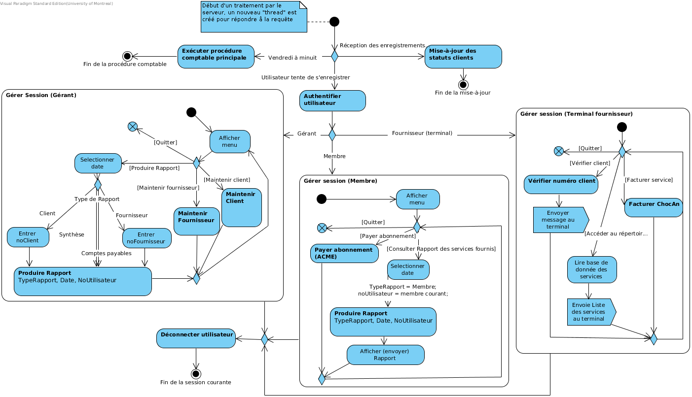Produire Rapport

Maintenir Client
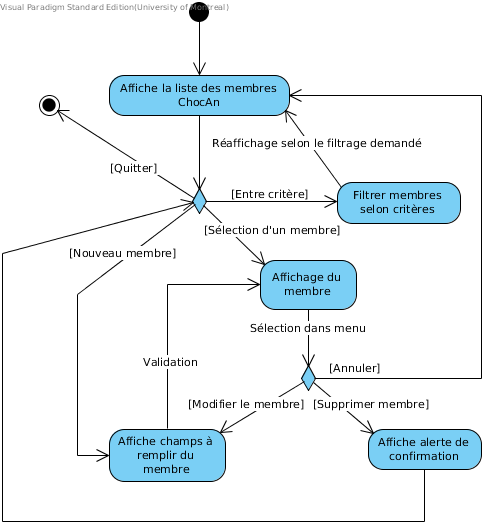Maintenir Service
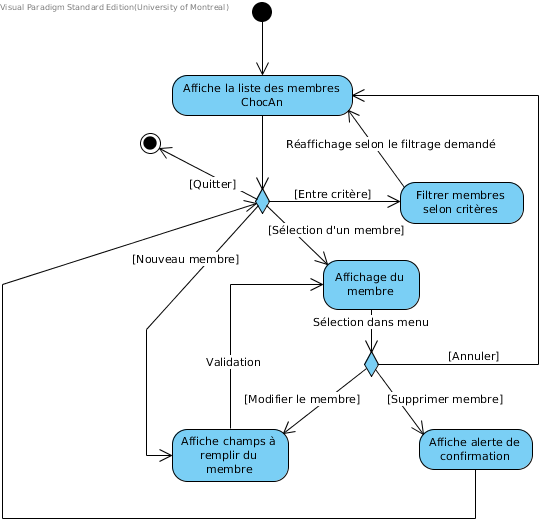Diagramme de classes participantes
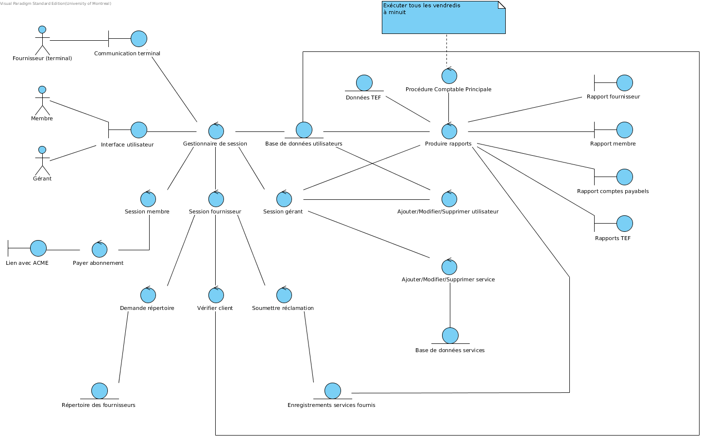Conception
Diagramme de classes
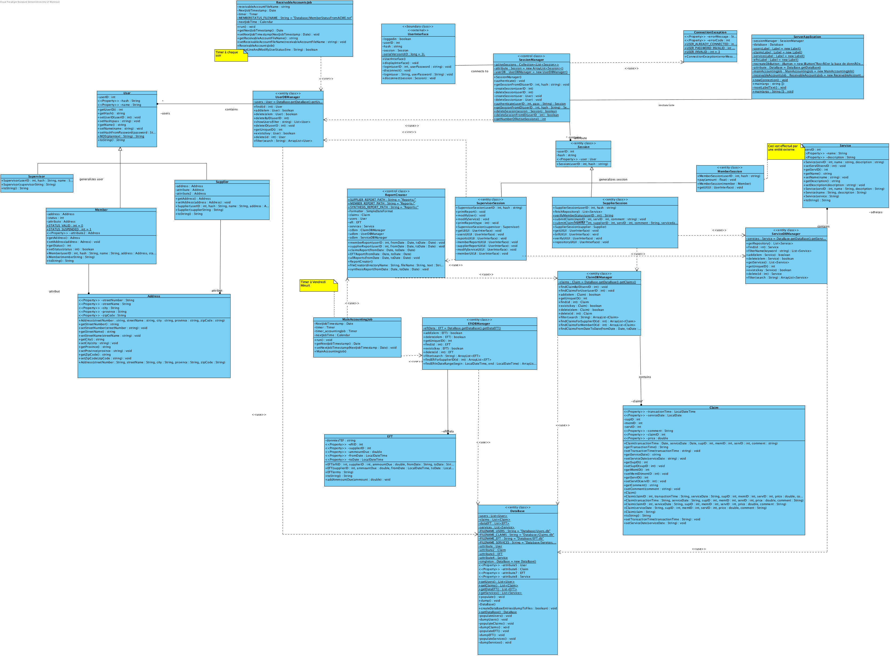Diagrammes de séquence
Authentification utilisateur
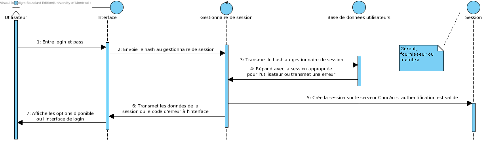Accès au répertoire des fournisseurs
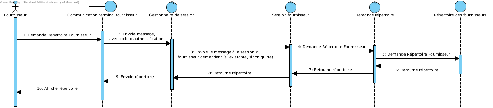Maintenir service
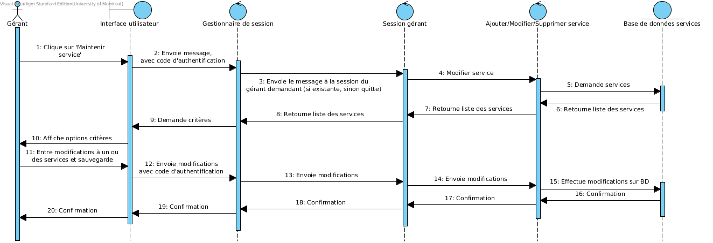Maintenir utilisateur
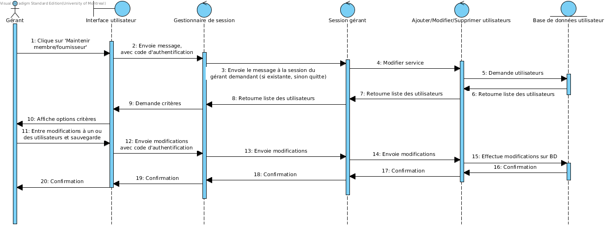Paiement membre
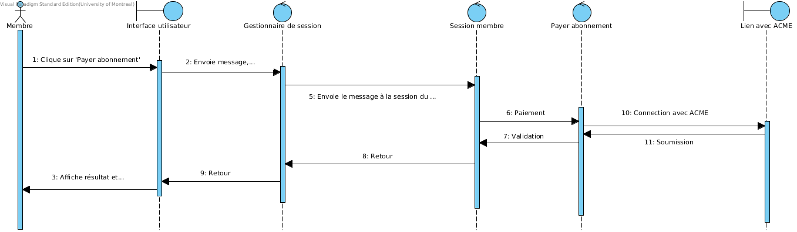Procédure comptable principale

Produire rapport comptes payables
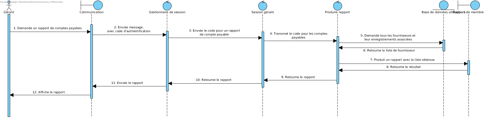Produire rapport fournisseur
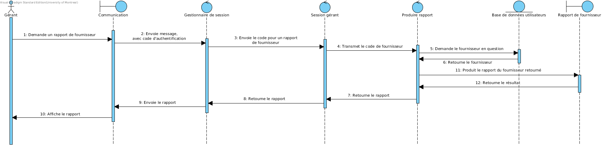Produire rapport membre
Produire rapport des Transferts Électronique de Fonds
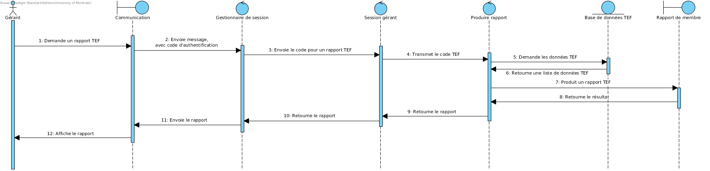Soumettre réclamation
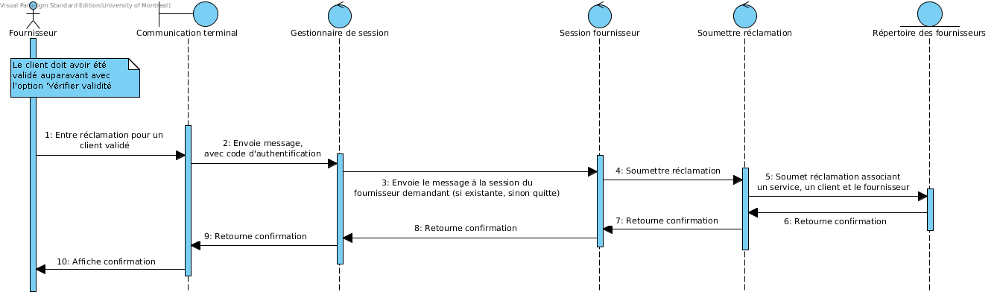Vérifier client
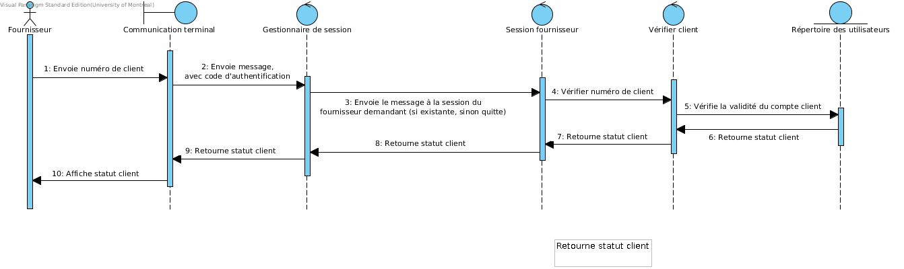Implémentation
Code source
L'entièreté du code source de l'application se trouve dans le fichier Sources/Configuration et ANT
Le fichier build.xml se trouve à la racine du projet.ANT est primordial pour bien compilé le code de ce projet. Pour voir les descriptions des options de build.xml, simplement exécuter 'ant -p'
Base de données
Les fichiers de la base de données se trouvent dans Application/Database/ et décrivent chacun un type différent. De plus, le fichier de comptes payables d'ACME devrait être déposé dans ce dossier avec le nom 'MemberStatusFromACME.txt'. Voir la javadoc de la tâche automatisé pour plus de plus amples détails. Ceci n'est qu'une simulation simpliste d'une base de données dans le simple but de tester cette application, et ne serait en aucun cas valable pour une version 'release' du projet.Manuel d'utilisateur
Manuel d'utilisateur en format pdf Manuel d'utilisateur en format LaTeXJavadoc
La javadoc de toutes les classes publiques du projet se trouve à Documentation/javadoc/Test
Tests unitaires
Les liens vers le code source de chacun des tests est dans le tableau de la distribution des tâches au début du rapport. Autrement, voici une capture d'écran du résultat des tests. Ils peuvent être lancés avec la commande "ant test" dans le terminal.
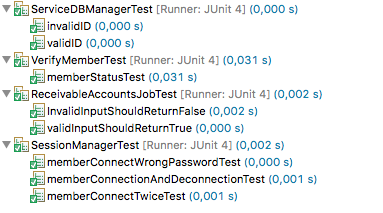Statistiques SVN
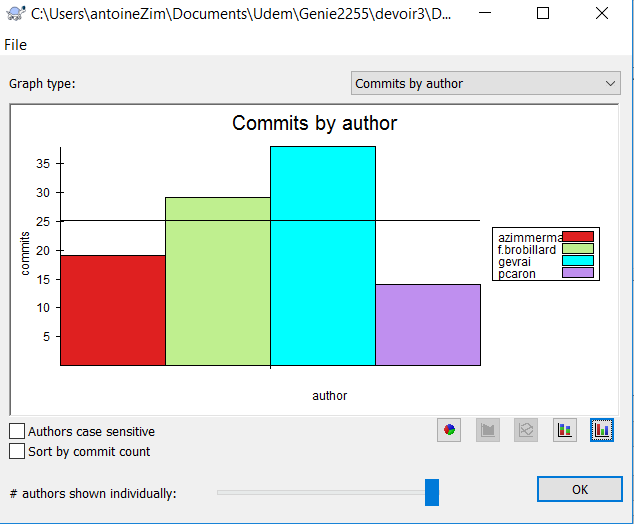 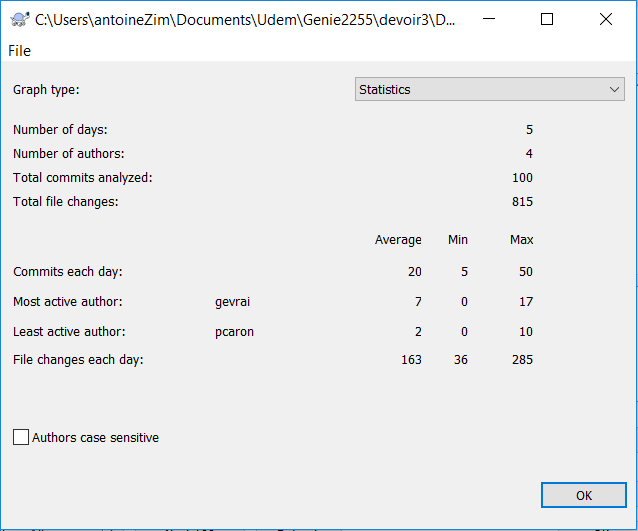